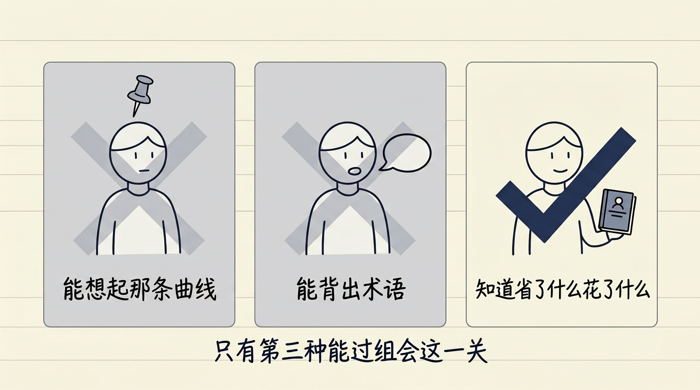
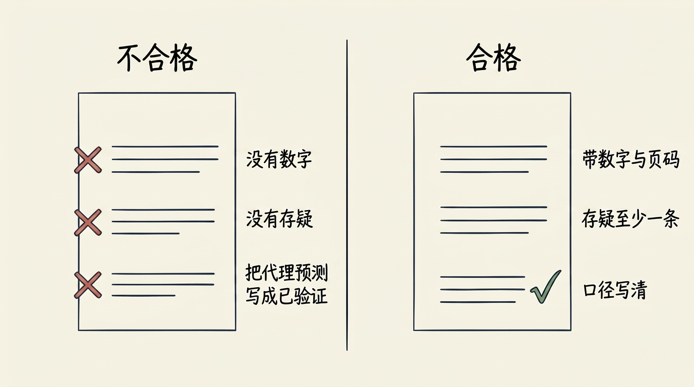
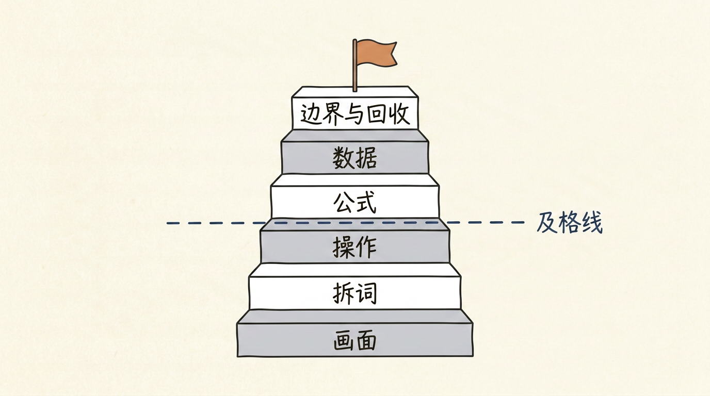
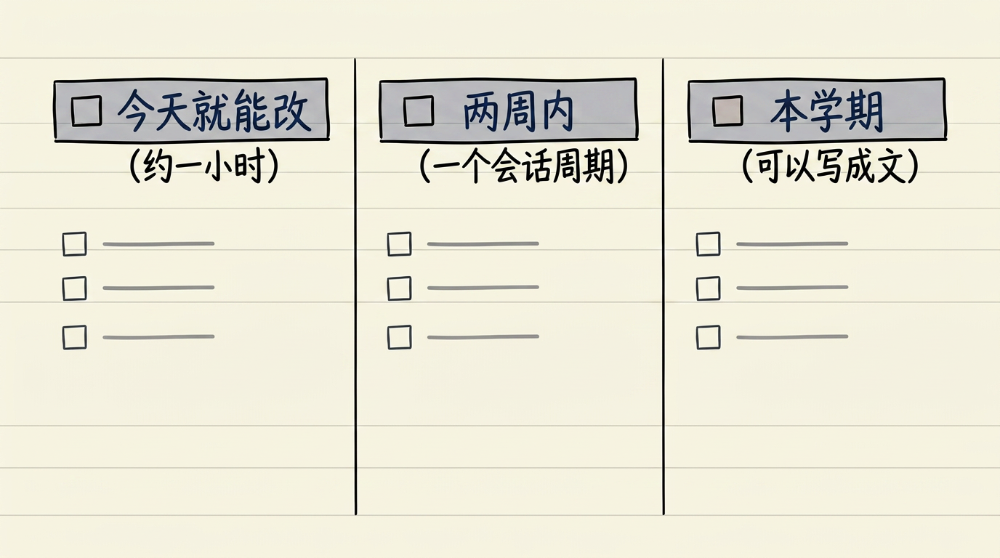
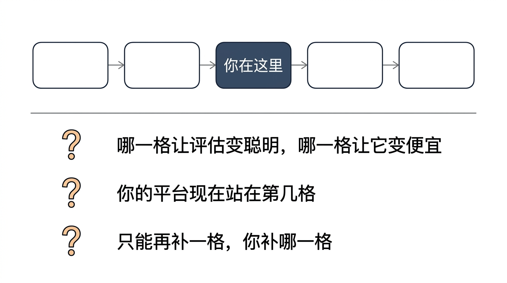
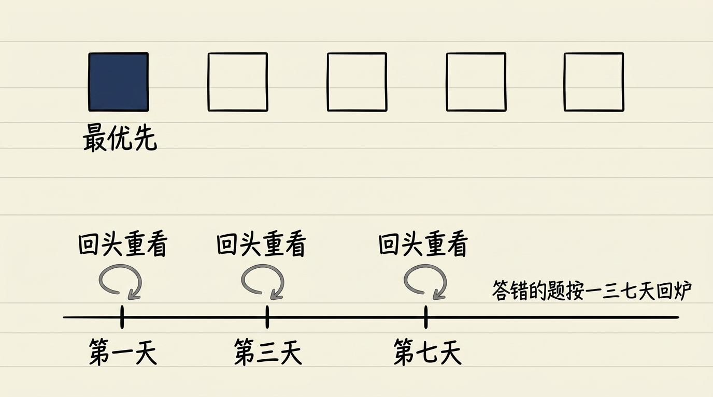
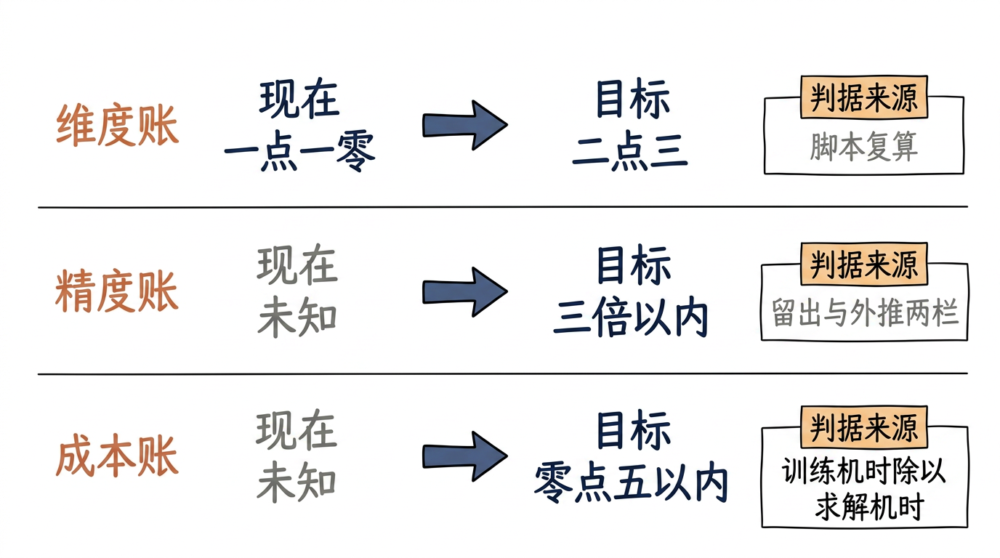
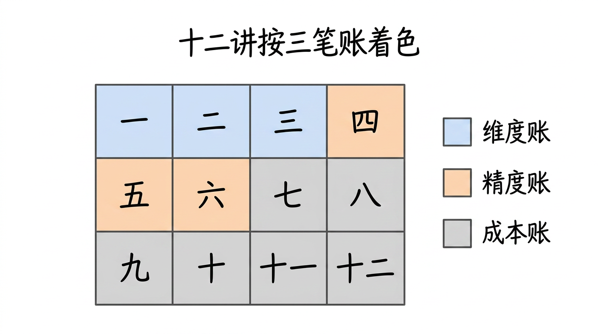
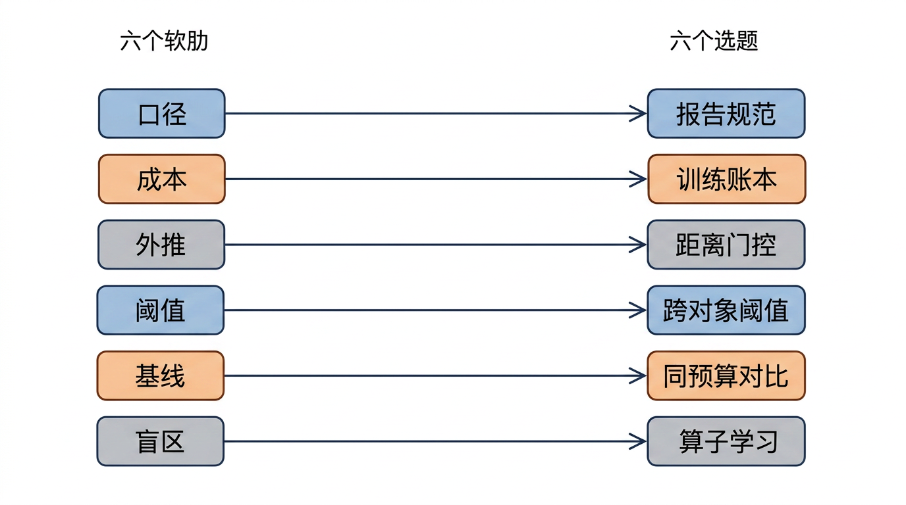
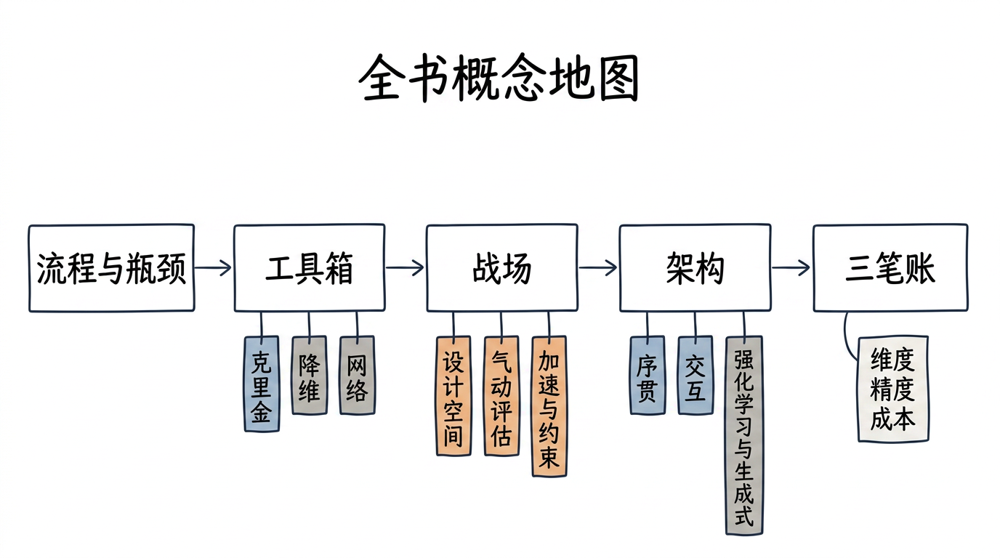

逐张看文字是否清晰不糊、中文是否有错字、结构是否与正文一致。发现问题的图，把 文件名 报给我，我单独重画。
（自检脚本无视觉能力，本页只能由人眼完成。）
| # | 图 | 位置 / 应表达的意思 |
|---|---|---|
| 1 |  | §3 👊 三种状态：记得图 / 记得话 / 记得账（只有第三种能过组会） L12v2_s1_three_states_zh.png |
| 2 |  | §4 左：不合格报告三处标红；右：四段齐全的合格报告 L12v2_s2_report_v1_v2_zh.png |
| 3 |  | §5 六层阶梯，及格线画在「操作」层 L12v2_s3_six_layers_zh.png |
| 4 |  | §6 三级清单：今天 / 两周 / 本学期 L12v2_s4_todo_three_columns_zh.png |
| 5 |  | §8 路线图三问：哪一格 / 你站第几格 / 补哪一格 L12v2_s5_roadmap_three_q_zh.png |
| 6 |  | §9 阅读队列 + 答错题按 1/3/7 天回炉 L12v2_s6_reading_queue_zh.png |
| 7 |  | §10 三笔账期末成绩单：现在值 → 目标 → 判据来源 L12v2_s8_three_accounts_zh.png |
| 8 |  | 第六篇 6.1 12 讲压成 3×4 网格，按三笔账着色 part6v2_s1_matrix_map_zh.png |
| 9 |  | 第六篇 6.2 六软肋 → 六选题，一条软肋长出一个题目 part6v2_s2_six_weakspots_zh.png |
| 10 |  | 第六篇章首 全书概念地图：流程 → 工具箱 → 战场 → 架构 → 三笔账 back_concept_map_zh.png |